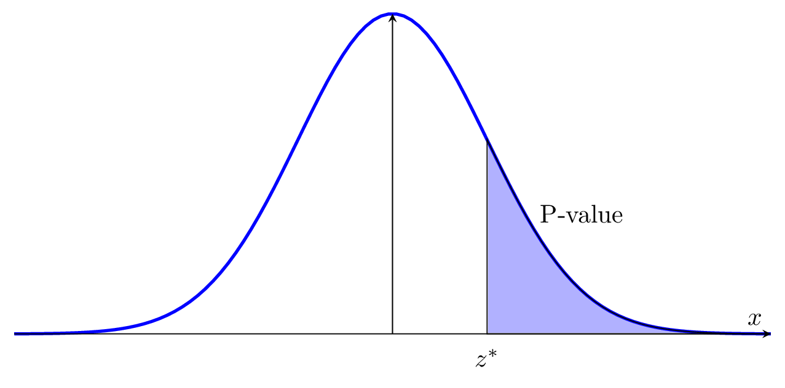
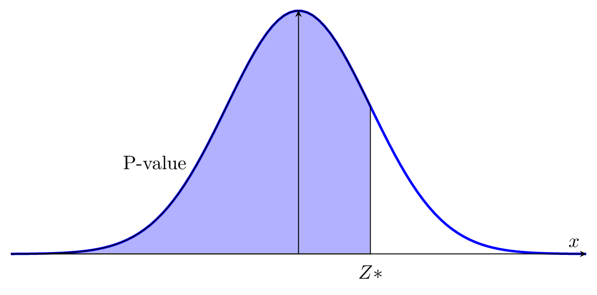
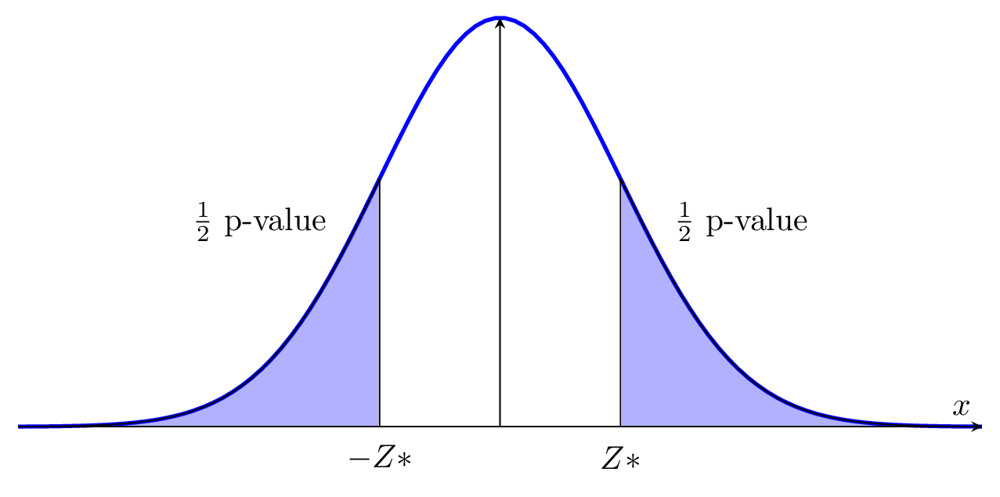

Inferential statistics is a powerful method for statistical analysis, because it allows people to analyze a lot parameters. Similarly to confidence interval, testing hypothesis can be applied to proportion and variance as well. Also, we use the exact same structure for one sample hypothesis test on a proportion and variance.
Suppose we have assume the proportion of a criteria from a population
\(p\) is equal to our parameter \(p_0\) (null hypothesis \(H_0: p = p_0\)). While, the question is:
how do we know whether our assumption is correct or not? We need to use
testing hypothesis on proportion to verify.
Step 1. Stating the Structure of Testing Hypothesis
First of all, let’s proceed with a table to see all the cases:
| Cases | Null Hypothesis | Alternative Hypothesis |
| 1 | H0 : p = p0 | Ha : p > p0 |
| 2 | H0 : p = p0 | Ha : p < p0 |
| 3 | H0 : p = p0 | Ha : p ≠ p0 |
We are not going to proceed with all three cases in a single
question. You need to be able to identify which case of testing
hypothesis are going to be applied from question.
Step 2. Computing Test Statistics
After that we need to compute our test statistics, as the following definition provides:
The test statistics of one sample hypothesis test on a proportion is given by: \[Z^* = Z^* = \frac{\hat{p} - p_0}{ \sqrt{ \frac{p_0(1-p_0)}{n} } }.\] In this case, \(n\) means the sample size, \(\hat{p}\) is the parameter of the proportion of the population, which is calculated by \(\hat{p} = \frac{\text{number of successes in the sample}}{n}\). Also, the reference distribution is standard normal distribution: \(N(0,1)\).
Note that be careful while you are computing the test statistics,
because it directly affects the final answer.
Step 3. Finding the \(p\) -
value
i. When is structure of testing hypothesis is \(H_0: p = p_0\), \(H_a: p > p_0\):

In case (i), calculating \(P[Z > Z_*]\) as your p-value. Then, comparing with significant level: \(\alpha\).
ii. When is structure of testing hypothesis is \(H_0: p = p_0\), \(H_a: p < p_0\):

In case (ii), calculating \(P[Z < Z_*]\) as your p-value. Then, comparing with significant level: \(\alpha\).
iii. When is structure of testing hypothesis is \(H_0: p = p_0\), \(H_a: p \neq p_0\):

In case (iii), calculating \(2\cdot P[Z
> |Z_*|]\) as your p-value. Then, comparing with significant
level: \(\alpha\).
Step 4: Comparing P-value with \(\alpha\)-level
If p-value is less than \(\alpha\)-level, then we reject the null
hypothesis (\(H_0\)) and accept the
alternative hypothesis (\(H_a\)).
Otherwise, If p-value is greater than \(\alpha\)-level, then we do not reject the
null hypothesis (\(H_0\)) and reject
the alternative hypothesis (\(H_a\)).
Step 5: Final Conclusion If we reject the null
hypothesis, then we conclude that: there is sufficient evidence to
reject the null hypothesis. If we do not reject the null hypothesis,
then we conclude that: there is insufficient evidence to reject the null
hypothesis.
Conditions on One Sample Test Hypothesis on a
Proportion
1. Random sample;
2. Independent sample: each observations are independent to others;
3. Sufficient sample.